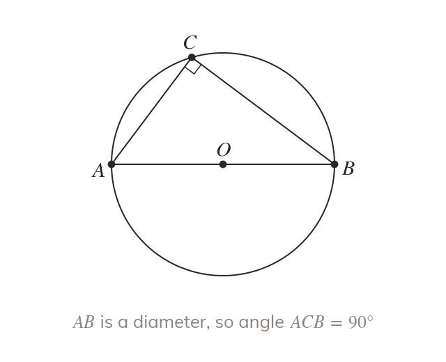
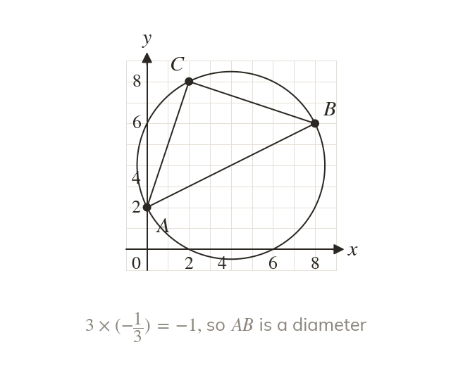
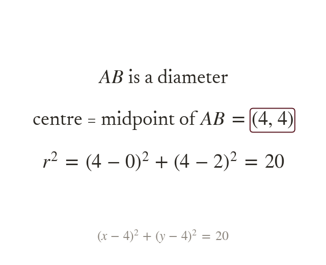
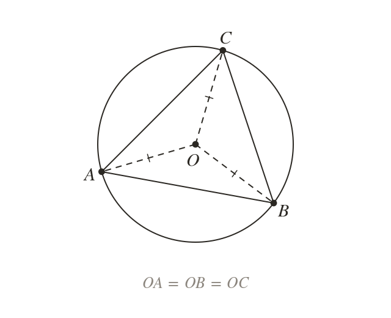
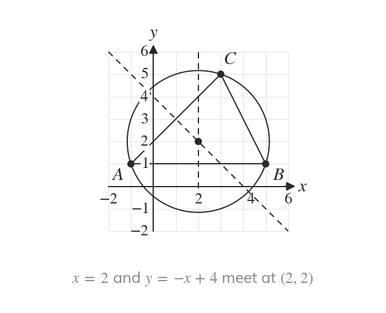
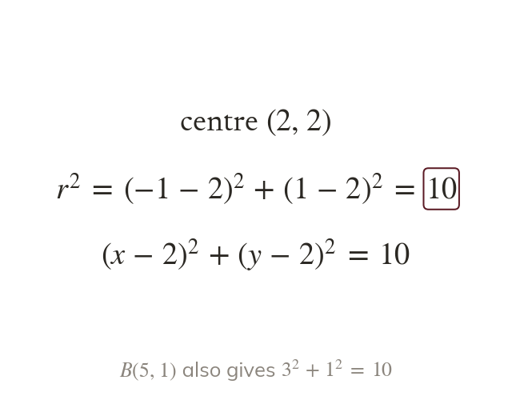

The angle in a semicircle
If is a diameter and is on the circle, angle is The converse is true too, so a right angle at makes a diameter.
The angle in a semicircle is a right angle, so a right angle in a triangle marks a diameter, and any three points not on a line fix exactly one circle. This is the last lesson of the chapter, and Chapter starts algebraic methods.
Work down the page at your own pace. Write every answer in your book first, then click to check it.
Read each card, then follow the worked examples one step at a time.

If is a diameter and is on the circle, angle is The converse is true too, so a right angle at makes a diameter.

Find the gradients of the two sides that meet at . If they multiply to angle is and is a diameter.

The hypotenuse is a diameter. So the centre is its midpoint and the radius is half its length.
Pick an answer. If it's wrong, the feedback tells you which mistake it was.
Write the blanks in your book first, then tap each one to check.
Read each card, then follow the worked examples one step at a time.

Three points not on one line lie on exactly one circle. Its centre is the same distance from all three, so it lies on the perpendicular bisector of every side.

Find the perpendicular bisectors of two sides and solve them simultaneously. They meet at the circumcentre.

The radius is the distance from the circumcentre to any vertex. Checking a second vertex catches a slip.
Pick an answer. If it's wrong, the feedback tells you which mistake it was.
Write the blanks in your book first, then tap each one to check.
Finished? Next lesson: 8.1 Pascal's Triangle.
For each skill, tap the one that is true for you today. Your Revise pages start with anything you mark Not yet.
Your ratings are saved on this device only.
Log in, then search for a code to practise that skill.